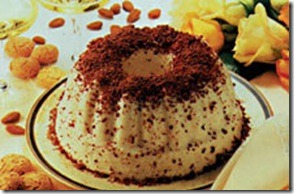

Manjar Turco - Crônicas de Nárnia

Ingredientes
- 1 xícara de água
- 5 colheres de sopa de amido de milho
- 2 xícaras de açúcar
- 1/2 xícara de suco de laranja natural
- 2 colheres de sopa de xarope de romã
- Açúcar de confeiteiro
Modo de preparo
- Em um panela, colocar para aquecer a água.
- Quando a água estiver quente, adicionar o açúcar e o suco de laranja, mexer até o açúcar derreter.
- Enquanto o açúcar derrete, misturar o restante da água com o amigo de milho.
- Quando o açúcar estiver todo derretido, juntar o amido de milho com a calda e deixar engrossar até ficar com textura de gel (cerca de 15 minutos), mexendo sempre para que não grude no fundo da panela.
- Desligar o fogo e adicionar o xarope de romã
- Forrar uma forma pequena com papel filme e despejar a mistura e esperar esfriar por no mínimo 3 horas em temperatura ambiente
- Polvilhar em uma tábua açúcar de confeiteiro e colocar o manjar turco
- Cortar em cubos e empanar no açúcar de confeiteiro
Bavaroise
Ingredientes
- 6 folhas de gelatina incolor
- 50 gramas de chantilly
- 100 gramas de castanha de cajú
- 6 colheres de sopa de açúcar
- 1/2 litro de leite
- 4 colheres de sopa de vinho branco suave
- 1 colher de café de essência de baunilha
- Raspas de chocolate para decorar
Modo de preparo
- Triture a castanha.
- Amoleça a gelatina em 3 colheres de sopa de água fria, esprema bem e dissolva no leite quente.
- Adicione a castanha triturada, o vinho, a essência de baunilha, o açúcar e misture bem.
- Leve a geladeira até iniciar a consistência, por cerca de uma hora e meia.
- Prepare o chantilly e misture com o creme de gelatina.
- Coloque em uma forma de cone no centro e leve a geladeira até ficar bem firme.
- Para desenformar, coloque a forma ligeiramente em água morna e depois vire sobre um prato.
- Decore com as raspas de chocolate.
Pavê dos padres

Ingredientes
- 1 lata de leite condensado, a mesma medida de leite
- 2 ovos
- Meia colher de sopa de amido de milho
- 6 colheres de chocolate em pó solúvel
- 4 colheres de açúcar
- 1 lata de creme de leite sem soro
- Meia xícara de chá de licor de cacau
- 1 pacote de biscoito tipo champagne
- Meio tablete de chocolate meio amargo picado
Modo de preparo
- Em uma panela misture o leite condensado, metade do leite, as gemas peneiradas, o amido de milho e 3 colheres de chocolate em pó.
- Leve ao fogo baixo, mexendo sempre até adquirir consistência cremosa.
- Reserve.
- Bata as claras em neve, junte o açucar sempre batendo até obter merengue.
- Misture delicadamente o creme de leite e reserve.
- Umedeça os biscoitos no misturador com o licor de cacau e com o restante do leite.
- Forre com parte dos biscoitos umidecidos uma forma retangular 20x30 cm.
- Despeje o creme de chocolate reservado, o chocolate meio amargo picado, os biscoitos restantes e por último, o merengue de claras reservado.
- No momento de servir peneire o chocolate em pó sobre a superfície.